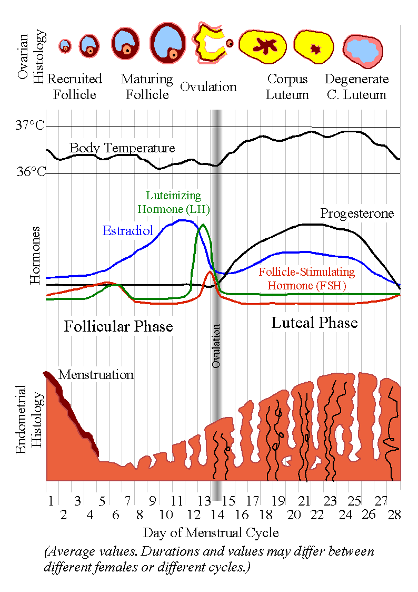

Đồng Hồ Sinh Học Thứ Hai Của Phụ Nữ: Nhịp Sinh Học Chu Kỳ (Infradian Rhythm)
Nếu bạn đeo Oura Ring, WHOOP, Apple Watch hoặc Garmin mỗi đêm, chắc hẳn bạn đã từng nhận thấy một quy luật thú vị: trong hai tuần đầu của tháng, Nhịp tim lúc nghỉ (RHR) của bạn duy trì ở mức thấp, Biến thiên nhịp tim (HRV) phục hồi nhanh chóng và những buổi tập nặng mang lại cảm giác vô cùng sảng khoái. Thế nhưng chỉ sau một đêm, nhiệt độ da bắt đầu nhích lên, RHR tăng thêm 4 đến 7 nhịp/phút, và cùng một bài tập quen thuộc bỗng trở nên nặng nề hơn hẳn.
Sức khỏe thể chất của bạn không hề đi xuống—và cảm biến trên đồng hồ cũng không hề bị lỗi. Trong khi sinh lý học con người vận hành theo Nhịp sinh học ngày đêm 24 giờ (Circadian Rhythm), cơ thể nữ giới còn được điều phối đồng thời bởi chiếc đồng hồ sinh học thứ hai: Nhịp sinh học chu kỳ (Infradian Rhythm — kéo dài khoảng 24 đến 35 ngày). Chu kỳ kinh nguyệt không chỉ diễn ra ở cơ quan sinh sản; đó là một bản giao hưởng nội tiết – thần kinh toàn thân, trực tiếp điều chỉnh thân nhiệt, nhịp tim, chuyển hóa đường huyết, cấu trúc giấc ngủ và sự cân bằng của hệ thần kinh tự chủ.

4 Giai Đoạn Chu Kỳ Kinh Nguyệt & Dấu Ấn Sinh Học Trên Thiết Bị Đeo
Thay vì chỉ nhìn nhận chu kỳ thành hai trạng thái "đang hành kinh" và "bình thường", các nền tảng y sinh hàng đầu như Oura Cycle Insights, WHOOP Menstrual Cycle Coaching và Clue chia chu kỳ thành hai nửa chính—Nửa Nang trứng (trước rụng trứng) và Nửa Hoàng thể (sau rụng trứng)—bao gồm 4 giai đoạn nội tiết rõ rệt:
| Giai Đoạn Chu Kỳ | Thời Gian Điển Hình (Chu Kỳ 28 Ngày) | Đặc Điểm Hormone Chủ Đạo | Chỉ Số Thiết Bị Đeo Ban Đêm (Nhiệt Độ, RHR & HRV) | Trạng Thái Năng Lượng, Chuyển Hóa & Phục Hồi |
|---|---|---|---|---|
| 1. Giai đoạn Hành kinh (Menstrual) | Ngày 1 – 5 | Estrogen và Progesterone hạ xuống mức thấp nhất tháng; Prostaglandin tử cung kích hoạt bong lớp niêm mạc. | Nhiệt độ da: Giảm về mức nền (−0.3°C đến −0.5°C) RHR: Giảm dần về mức thấp nhất tháng HRV: Bật tăng trở lại |
Hệ thần kinh phó giao cảm phục hồi mạnh mẽ từ sau Ngày 2; sự thiếu hụt sắt và co thắt tử cung có thể gây mỏi nhẹ vào Ngày 1–2. |
| 2. Giai đoạn Nang trứng (Follicular) | Ngày 6 – 13 | Hormone FSH tuyến yên kích thích nang trứng phát triển; nồng độ Estradiol (E2) tăng vọt. | Nhiệt độ da: Ổn định ở mức thấp dưới đường nền RHR: Thấp nhất trong tháng HRV: Cao nhất trong tháng |
Độ nhạy Insulin tối ưu, dự trữ Glycogen cơ bắp hiệu quả, ngưỡng chịu đau cao và tốc độ phục hồi thần kinh – cơ nhanh nhất. |
| 3. Giai đoạn Rụng trứng (Ovulatory) | Ngày 13 – 15 | Đỉnh Estradiol kích hoạt đỉnh sóng LH từ tuyến yên kèm đỉnh Testosterone ngắn hạn; trứng được phóng thích. | Nhiệt độ da: Điểm uốn (bắt đầu tăng ngay sau khi rụng trứng) RHR: Bắt đầu nhích nhẹ HRV: Đang ở đỉnh cao và chuẩn bị chuyển giao |
Sức mạnh bùng nổ, sự tự tin giao tiếp và ham muốn đạt đỉnh; độ giãn dây chằng tăng nhẹ tạm thời khi Estrogen đạt đỉnh. |
| 4. Giai đoạn Hoàng thể (Luteal) | Ngày 16 – 28 | Nang trứng vỡ chuyển thành Hoàng thể (Corpus Luteum), tiết lượng lớn Progesterone cùng đỉnh Estrogen thứ cấp. | Nhiệt độ da: Tăng +0.3°C đến +0.5°C (+0.5°F đến +0.9°F) RHR: Tăng +3 đến +7 bpm HRV: Giảm 5% – 15% |
Tốc độ trao đổi chất cơ bản (BMR) tăng 100–250 kcal/ngày; áp lực điều hòa thân nhiệt cao hơn, tăng dị hóa đạm và giấc ngủ REM nhạy cảm hơn. |
Giải Mã Từng Giai Đoạn: Điều Gì Diễn Ra Trong Cơ Thể Và Trên Đồng Hồ?
Giai đoạn 1: Giai đoạn Hành kinh (Ngày 1–5) — Nút "Reset" Hệ Thần Kinh Tự Chủ
Ngày đầu tiên xuất hiện dòng máu kinh đỏ tươi được tính là Ngày 1 của chu kỳ. Nếu quá trình thụ tinh không diễn ra ở chu kỳ trước, hoàng thể sẽ thoái hóa, kéo nồng độ cả Estrogen và Progesterone xuống mức đáy. - Tín hiệu trên thiết bị đeo: Điều thú vị là dù Ngày 1 và Ngày 2 bạn có thể cảm thấy đau bụng âm ỉ hoặc nặng vùng chậu, dữ liệu sinh trắc học ban đêm lại ghi nhận một sự giải tỏa áp lực sinh lý tức thì. Khi hormone sinh nhiệt Progesterone rút khỏi máu, nhiệt độ da ban đêm giảm ngay 0.3°C đến 0.5°C về mức nền, nhịp tim lúc nghỉ (RHR) chậm lại, và HRV bật tăng sang vùng màu xanh.
Giai đoạn 2: Giai đoạn Nang trứng (Ngày 6–13) — Cửa Sổ Vàng Của Estrogen
Khi kỳ kinh kết thúc, tuyến yên tiết ra Hormone kích thích nang trứng (FSH) để nuôi dưỡng các nang noãn tại buồng trứng. Nang trội phát triển mạnh sẽ bơm một lượng lớn 17β-estradiol (dạng Estrogen có hoạt tính sinh học mạnh nhất) vào máu. - Tín hiệu trên thiết bị đeo: Trong các nghiên cứu dữ liệu lớn trên hàng chục nghìn phụ nữ đeo thiết bị thông minh (Sims et al., PLOS ONE 2021; Alzueta et al., 2022), nửa cuối giai đoạn Nang trứng luôn ghi nhận Nhịp tim lúc nghỉ thấp nhất, Biến thiên nhịp tim (RMSSD) cao nhất và Hiệu suất giấc ngủ (Sleep Efficiency) tốt nhất tháng. Estrogen kích thích trương lực dây thần kinh phế vị (phó giao cảm), tăng độ đàn hồi mạch máu và giúp cơ bắp hấp thu glucose cực kỳ hiệu quả.
Giai đoạn 3: Giai đoạn Rụng trứng (Khoảng Ngày 13–15) — Đỉnh Cao Nội Tiết
Khi nồng độ Estradiol vượt ngưỡng kích hoạt trong suốt 36 đến 48 giờ, nó sẽ bật công tắc tại vùng dưới đồi và tuyến yên, phóng thích đỉnh sóng Hormone tạo hoàng thể (LH) đi kèm một đợt tăng vọt Testosterone tự do. Trong vòng 24 đến 36 giờ sau đỉnh LH, nang trứng vỡ ra và phóng thích noãn bào vào ống dẫn trứng. - Tín hiệu trên thiết bị đeo: Rụng trứng chính là bản lề nhiệt độ của cả tháng. Trong vòng 24 đến 48 giờ sau khi trứng rụng, nhẫn hoặc đồng hồ thông minh sẽ phát hiện nhiệt độ da ban đêm bắt đầu vượt lên trên đường cơ sở cá nhân.
Giai đoạn 4: Giai đoạn Hoàng thể (Ngày 16–28) — Cuộc Đua Sức Bền Với Progesterone
Sau khi trứng rụng, vỏ nang trứng còn lại biến đổi thành một tuyến nội tiết tạm thời gọi là Hoàng thể (Corpus Luteum), tiết ra từ 20 đến 25 mg Progesterone mỗi ngày để làm dày và giàu mạch máu cho lớp niêm mạc tử cung. - Tín hiệu trên thiết bị đeo: Progesterone tác động trực tiếp lên vùng trước thị của dưới đồi (Hypothalamus)—trung tâm điều nhiệt của não bộ—khiến nhiệt độ lõi và nhiệt độ da ngoại vi tăng thêm +0.3°C đến +0.5°C (+0.5°F đến +0.9°F). Để duy trì trạng thái trao đổi chất và thân nhiệt cao này, hệ thần kinh giao cảm hoạt động mạnh hơn: - Nhịp tim lúc nghỉ (RHR) tăng thêm 3 đến 7 bpm (thậm chí tăng tới 8 bpm ở những ngày sát kỳ kinh). - Nhịp thở ban đêm tăng thêm 0.5 đến 1.5 nhịp/phút. - Chỉ số HRV giảm từ 5% đến 15%, đồng thời các nghiên cứu giấc ngủ lâm sàng (Baker & Driver, 2007) cho thấy thời lượng giấc ngủ REM giảm nhẹ ở nửa cuối pha Hoàng thể.
Lưu Ý Quan Trọng Từ Chuyên Gia Thiết Bị Đeo: Một trong những cải tiến lớn nhất của Oura Ring và WHOOP là giúp người dùng hiểu rằng: việc HRV giảm nhẹ và RHR tăng lên vào Ngày 23 của chu kỳ là phản ứng sinh lý hoàn toàn khỏe mạnh của hormone Progesterone—chứ không phải dấu hiệu bạn bị sụt giảm thể lực hay sắp ốm!
Tình Huống Thực Tế: Biện Pháp Tránh Thai Nội Tiết Thay Đổi Biểu Đồ Ra Sao?
- Thuốc tránh thai hàng ngày dạng phối hợp, miếng dán hoặc vòng âm đạo nội tiết: Estrogen và Progestin tổng hợp ức chế đỉnh LH và ngăn rụng trứng, giữ nồng độ hormone ngoại sinh ổn định trong các tuần dùng thuốc. Dữ liệu từ Sims et al. (2021) cho thấy người dùng thuốc tránh thai phối hợp có đường cong nhiệt độ và HRV phẳng hơn trong tháng, với mức RHR nền hơi cao tương tự pha hoàng thể nhẹ, sau đó RHR giảm rõ rệt trong 4–7 ngày nghỉ thuốc (hoặc uống viên giả dược).
- Vòng tránh thai nội tiết (IUD Levonorgestrel) hoặc Vòng đồng: Vì vòng đồng không chứa hormone—và phần lớn phụ nữ đặt vòng nội tiết liều thấp tại chỗ vẫn rụng trứng tự nhiên—thiết bị đeo của bạn vẫn sẽ ghi nhận đường cong nhiệt độ hai pha (Biphasic shift), đỉnh HRV ở pha Nang trứng và mức tăng RHR ở pha Hoàng thể, ngay cả khi lượng máu kinh rất ít hoặc vô kinh!
4 Bước Ứng Dụng Dữ Liệu Chu Kỳ Vào Đời Sống Hàng Ngày
- Ghi Nhận Chính Xác "Ngày 1" Trên Ứng Dụng: Luôn đánh dấu Ngày 1 là ngày đầu tiên có dòng máu kinh thực sự (không tính những ngày ra chút dịch nâu báo hiệu trước kỳ kinh). Việc chốt đúng Ngày 1 giúp thuật toán phân tách chính xác đường nền giữa pha Nang trứng và pha Hoàng thể.
- Lên Lịch Tập Nặng & Dự Án Lớn Vào Ngày 3–14: Tận dụng lợi thế thân nhiệt mát mẻ, độ nhạy Insulin cao và HRV dồi dào từ cuối kỳ kinh sang pha Nang trứng để bứt phá kỷ lục cá nhân (PR) hoặc giải quyết công việc đòi hỏi tư duy cao độ.
- Làm Mát Cơ Thể & Bổ Sung Điện Giải Ở Pha Hoàng Thể (Ngày 16–28): Vì Progesterone vừa làm tăng thân nhiệt vừa cạnh tranh với thụ thể Aldosterone ở thận (khiến cơ thể bài tiết nhiều Natri hơn qua nước tiểu), hãy bổ sung thêm điện giải (
300–500 mg Natri+Magie) và hạ nhiệt độ phòng ngủ xuống 18°C (65°F) trong 2 tuần trước kỳ kinh. - Theo Dõi Cú Hạ Nhiệt Độ Cuối Pha Hoàng Thể: Nếu không mang thai, nhiệt độ da ban đêm sẽ bắt đầu rơi xuống về đường cơ sở 24 đến 48 giờ trước khi kỳ kinh bắt đầu—giúp bạn chủ động chuẩn bị trước khi ngày đèn đỏ gõ cửa.
Tài Liệu Tham Khảo & Nguồn Y Khoa
- Baker, F. C., Siboza, F., & Fuller, A. (2020). Temperature regulation in women: Effects of the menstrual cycle. Temperature, 7(3), 226–262. Đọc trên PubMed / NIH ↗
- Sims, S. T., Ware, L., & Capodilupo, E. R. (2021). Patterns of endogenous and exogenous ovarian hormone modulation on recovery metrics across the menstrual cycle. BMJ Open Sport & Exercise Medicine / PLOS ONE, 7(3), e001047. Đọc trên PubMed / NIH ↗
- Oura Ring Pulse Blog. How Your Menstrual Cycle Affects Your Body, Sleep, and Biometrics (Oura Cycle Insights). Đọc trên Oura Ring ↗
- Clue Reproductive Health Encyclopedia. The Menstrual Cycle: More Than Just Your Period. Đọc trên Clue ↗